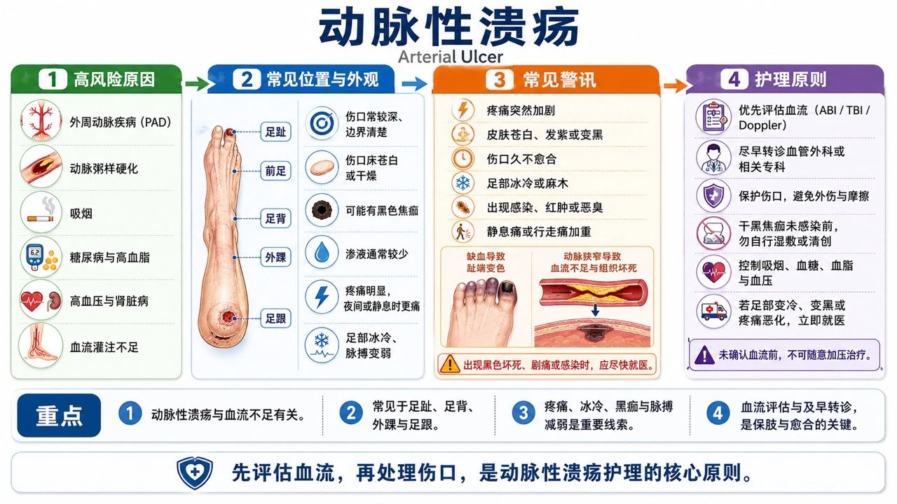
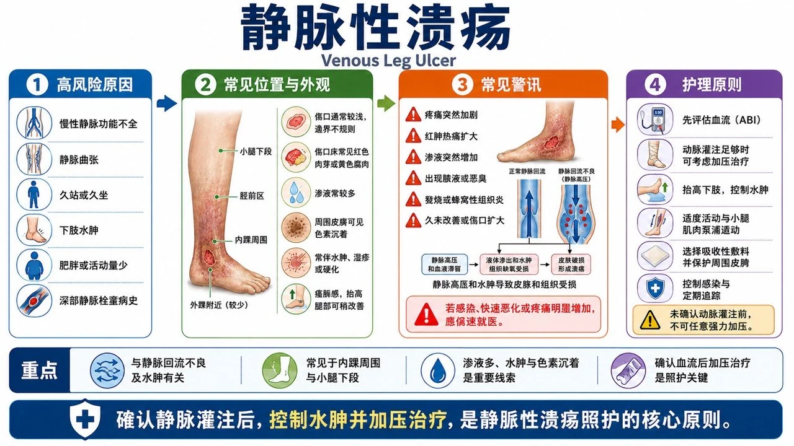
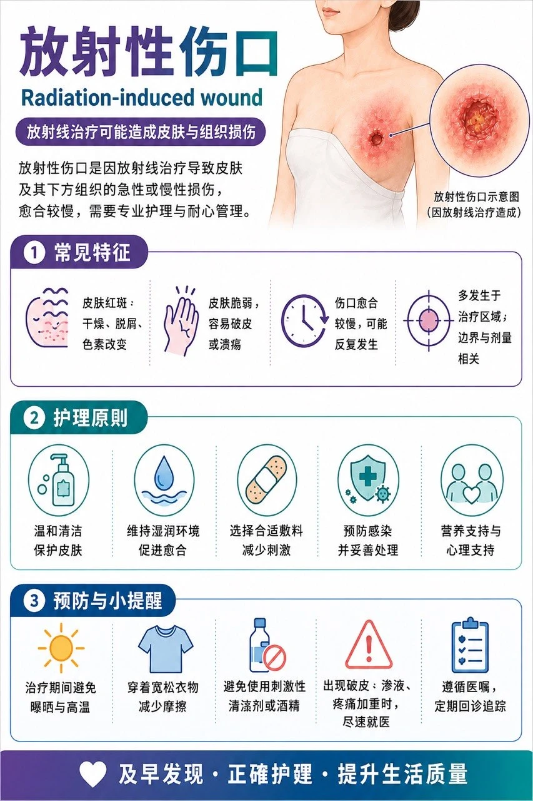
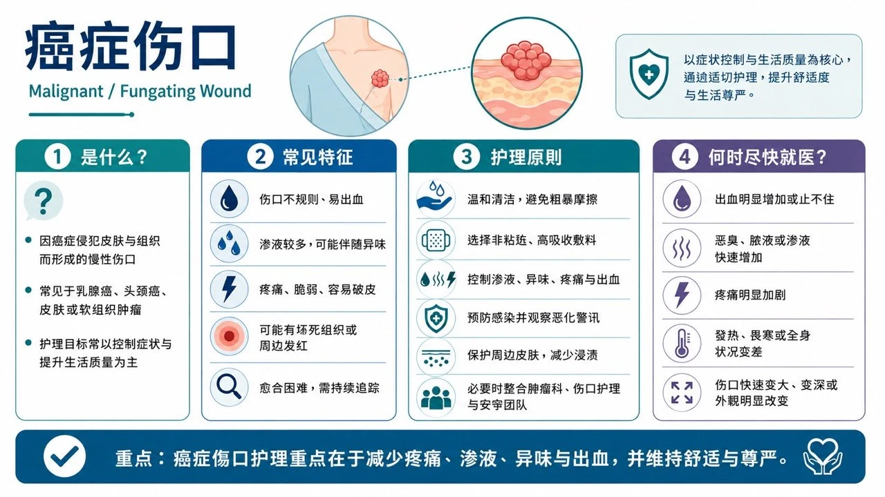

常见慢性伤口（一般民众版）
一、糖尿病足伤口


常见位置：脚趾尖、趾缝；足底受力处（前脚掌、脚跟）；拇趾外侧、骨头突出处；鞋子摩擦压迫处；鸡眼、厚茧或水泡下方。
可能原因：糖尿病神经病变使痛觉与压力感减退；鞋子不合、反复摩擦或足底压力过高；足部变形、厚茧或步态异常；周边动脉循环不良；小伤口、香港脚、嵌甲或自行剪鸡眼后感染；血糖控制不佳。
可观察的外观与症状：水泡、裂伤、溃疡、渗液或黑色组织；周围红肿热或异味；脚麻、刺痛或感觉迟钝；足部冰冷、苍白或暗紫；伤口可能很深但不一定会痛；突然肿胀、变形或局部温度明显升高。
高风险族群：曾有糖尿病足溃疡或截肢者；神经病变、足部变形或厚茧者；肾脏病、洗肾或周边动脉疾病者；视力不良、行动不便无法自行检查足部者；血糖长期控制不佳或吸烟者。
日常照护：每天检查脚底、脚趾与趾缝（可用镜子或请家人协助）；穿合脚包覆性好的鞋袜、穿鞋前检查鞋内异物；不赤脚行走、不自行剪鸡眼厚茧、不用腐蚀性药水；依指示换药及减压，不要因「不痛」而继续踩踏伤口；控制血糖、戒烟、按时回诊。
不适合自行处理：任何新发现的糖尿病足溃疡；红肿快速扩大、化脓、恶臭、发烧畏寒；伤口变黑、脚趾变紫或足部突然冰冷；深可见肌腱或骨头；足部突然肿热变形（即使没有明显伤口）；精神变差、呼吸急促或血糖明显失控。
应看哪一科：优先寻求糖尿病足集成门诊、伤口照护中心、新陈代谢科或内分泌科；疑循环不良由心脏血管外科／血管外科评估；深部感染、坏死或骨髓炎疑虑需感染科、骨科或整形外科共同处理。（IWGDF 2023 糖尿病足指南）
二、压伤／压疮


常见位置：尾骶骨、臀部坐骨处；脚跟脚踝；髋部大转子；手肘、肩胛、脊椎突出处；后脑、耳朵；鼻导管、氧气面罩、石膏或固定器压迫处。
可能原因：同一位置长时间受压；身体下滑产生剪力；皮肤与床单衣物反复摩擦；尿便汗使皮肤长期潮湿；营养不良、脱水或循环不佳。
可观察的外观与症状：浅色皮肤出现持续不退的红；深色皮肤呈暗紫蓝色或颜色加深；局部疼痛发热变硬肿胀或触感像海绵；水泡、破皮或浅层溃疡；严重时深入脂肪肌肉肌腱甚至骨骼；可有渗液、坏死、异味或感染。
高风险族群：长期卧床、坐轮椅或无法自行翻身者；中风、脊髓损伤、失智或意识不清者；感觉障碍、重病或术后患者；尿便失禁者；高龄、消瘦、肥胖、营养不良或曾有压伤者。
日常照护：依照护计划定时变换姿势、避免直接压在受伤部位；使用专业评估的减压床垫坐垫或脚跟悬空设备；每天检查骨突处与器材接触处；保持皮肤清洁干燥、妥善处理失禁；注意蛋白质热量与水分（必要时营养师评估）；移动时减少拖拉摩擦。
不适合自行处理：持续不退的红、暗紫或黑色区域；已形成水泡破皮或溃疡；快速变深、黑色组织、脓液或臭味；周围红肿扩大、发烧畏寒或精神变差；可见脂肪肌腱或骨头；不知如何安全翻身或选减压设备。
应看哪一科：伤口照护中心、整形外科、一般外科、复健科、家庭医学科、居家护理或长照伤口护理。深部坏死或疑骨髓炎需外科清创与感染科评估。压伤早期可能只有颜色或触感改变，但深部组织已受损。（NHS 压伤卫教）
三、动脉循环不良伤口


常见位置：脚趾尖、趾缝；脚跟；足部外侧；脚踝外侧；鞋子摩擦或轻微外伤处。
可能原因：周边动脉疾病与动脉粥样硬化；血管狭窄阻塞造成缺血；糖尿病、吸烟、高血压或高血脂；血栓或其他血管疾病。
可观察的外观与症状：边界较清楚、像被挖出的小洞；底部苍白干燥发黑或坏死；渗液不多但可能非常疼痛；擡脚时痛或苍白加重、垂下稍缓解；足部冰冷麻木、皮肤发亮毛发减少；走路小腿痛休息改善；脉搏减弱或摸不到。
高风险族群：吸烟者；糖尿病、高血压、高血脂；心血管疾病、中风或肾脏病；高龄；曾接受下肢血管手术或周边动脉疾病者。
日常照护：保护足部避免碰撞烫伤与赤脚行走；适度保暖但不直接用热水袋电毯；控制三高并戒烟；不要自行使用弹性绷带或高压力袜；应接受血流检查（踝肱血压比、血管超音波）。
不适合自行处理：休息仍剧烈脚痛或夜间痛醒；脚趾足部突然冰冷苍白发紫麻木；发黑坏疽恶臭或快速恶化；突然失去感觉或活动能力；持续不愈合；未经血流评估不宜自行加压包扎。
应看哪一科：心脏血管外科、血管外科或具血管检查能力的伤口照护中心。突然冰冷、剧痛、苍白、麻木或活动障碍可能是急性肢体缺血，应立即急诊。血流未恢复前单靠敷料很难愈合。（NHS 周边动脉疾病）
四、静脉循环不良伤口


常见位置：小腿下段；脚踝上方（尤其内侧）；通常不以脚趾尖或足底为主。
可能原因：静脉瓣膜功能不全；静脉曲张；曾深部静脉栓塞；长期站坐或小腿肌肉帮浦不足；静脉压长期升高损伤皮肤组织。
可观察的外观与症状：较浅、形状不规则；渗液较多；小腿脚踝肿胀沉重酸痛；周围皮肤褐色暗沉变硬；干燥脱屑发痒或静脉性湿疹；可伴静脉曲张；擡腿后不适减轻。
高风险族群：静脉曲张或曾静脉溃疡者；曾深部静脉栓塞者；长期站坐或活动量不足者；肥胖、高龄或下肢手术后；小腿长期水肿者。
日常照护：先接受血流评估，再由专业人员决定是否压迫治疗；依指示擡腿、步行、活动脚踝；避免久坐久站；保护周围皮肤避免抓伤；按时换药处理渗液；愈后依医嘱穿医疗压力袜防复发。
不适合自行处理：未检查动脉血流前自行紧绷包扎；脚冰冷苍白剧痛或脉搏微弱；红肿热痛快速扩大、发烧或恶臭脓液；单侧小腿突然明显肿痛（需排除深部静脉栓塞）；快速变大变黑或大量出血。
应看哪一科：伤口照护中心、心脏血管外科、血管外科或一般外科。压迫治疗是静脉性伤口的重要治疗，但必须先确认动脉血流足够。（NHS 静脉性腿部溃疡）
五、长期水肿相关伤口
常见位置：小腿、脚踝与足背；淋巴水肿的手臂或腿；皮肤皱褶或反复渗液处；曾淋巴结手术或放射治疗的肢体。
可能原因：慢性静脉功能不全；淋巴系统先天异常或后天受损；癌症手术、淋巴结切除或放射治疗；心肾肝疾病；缺乏活动、肥胖或反复感染。
可观察的外观与症状：肢体肿胀沉重紧绷；初期按压留凹痕；后期皮肤变厚硬粗糙或皱褶；皮肤裂开、水泡或持续渗透明液；衣鞋戒表变紧；易反复蜂窝性组织炎。
高风险族群：癌症手术、淋巴结切除或放疗者；慢性静脉疾病；心肾肝功能不良；肥胖、活动不足或长期卧床；曾反复蜂窝性组织炎者。
日常照护：保持皮肤清洁并保湿防干裂；避免割伤虫咬烫伤抓痒；依专业指示运动、擡高或使用压迫用品；处理香港脚、趾缝潮湿及小伤口；每天观察肿胀、温度、颜色与渗液；应先查明水肿原因，不能只靠利尿剂或自行包扎。
不适合自行处理：单侧肢体突然肿痛或变色；皮肤突然红热痛合并发烧畏寒；水肿伴呼吸困难、胸痛或尿量减少（急症）；大量渗液异味化脓或快速扩大；未确认动脉循环及水肿原因前自行强力加压。
应看哪一科：先由家庭医学科或内科查水肿原因，再转介心脏内科、肾脏科、肝胆肠胃科、血管外科、复健科、淋巴水肿治疗团队或伤口照护中心。（NHS 淋巴水肿）
六、放射治疗后伤口


常见位置：曾放疗的皮肤范围；乳房、胸壁、头颈、骨盆或四肢；皮肤皱褶处；手术疤痕与放疗范围重叠处。
可能原因：放射线损伤皮肤微血管及深部组织；治疗中的急性皮肤反应；数月数年后的纤维化、缺血或坏死；手术、摩擦、感染诱发破皮；肿瘤复发也可能表现为不愈合伤口，需要鉴别。
可观察的外观与症状：皮肤红或变深、干燥脱屑疼痛；湿润破皮渗液或溃疡；长期变薄变硬失去弹性；微血管扩张、色素变化；反复裂开、感染或愈合缓慢。
高风险族群：高剂量或重复放疗者；同时化疗、标靶或免疫治疗者；糖尿病、抽烟、营养不良或循环不佳者；放疗部位有皱褶摩擦或手术伤口者；曾严重放射性皮肤炎者。
日常照护：保持清洁、避免摩擦抓伤日晒；穿宽松柔软衣物；放疗期间用任何药膏敷料前先询问放疗团队；不用刺激性消毒剂或成分不明产品；记录伤口变化；注意放疗数月数年后才出现的皮肤改变。
不适合自行处理：大面积湿性脱皮、剧痛或大量渗液；溃烂出血化脓异味；放疗结束仍持续恶化；原治疗区数月数年后出现新肿块或新伤口；深达肌肉骨骼；发烧畏寒全身不适。
应看哪一科：先联系原放射肿瘤科或癌症团队，必要时会诊整形外科、皮肤科、伤口照护中心、肿瘤内科或外科；疑复发需影像或切片。（NCI 放射治疗副作用）
七、癌症相关伤口


常见位置：乳房或胸壁；头颈部；皮肤癌原发部位；肿瘤接近皮肤或转移处；术后复发疤痕附近。
可能原因：肿瘤生长突破皮肤；压迫破坏微血管使组织缺血坏死；复发或皮肤转移；治疗造成免疫下降、感染或愈合不良。
可观察的外观与症状：不规则肿块、溃疡或蕈状突出；易渗血或轻碰出血；大量渗液、坏死及异味；疼痛搔痒或周围浸润；逐渐增大可伴感染；外观变化可能造成心理与社交压力。
高风险族群：皮肤癌、乳癌、头颈癌；肿瘤近皮肤；局部晚期或转移性癌症；疤痕附近复发；免疫下降、营养不良或多重治疗者。
日常照护：换药轻柔、避免摩擦撕扯；用不易黏伤口的敷料，依专业建议处理渗液异味；换药前备好止血用品；记录出血渗液气味疼痛与大小；疼痛异味出血都可寻求症状控制，不必因害羞而隐瞒；照护目标可能是控制症状与生活品质，不一定以完全愈合为唯一目标。
不适合自行处理：反复或大量出血；喷射状出血或加压无法止血（立即调用急救）；快速增大坏死或疼痛明显增加；大量渗液恶臭化脓或发烧；新肿块溃疡或疤痕破裂；不可自行剪除突出组织或强力刷洗。
应看哪一科：原癌症治疗团队（肿瘤内科、外科、放射肿瘤科）；另可寻求伤口照护中心、整形外科、皮肤科及缓和医疗团队。（Macmillan 癌症溃疡伤口）
八、长期没有愈合的伤口
常见位置：任何部位皆可能；常见于小腿脚踝足部脚趾、骨突或长期受压处、手术切口或外伤部位、曾放疗区域、反复发炎渗液处。
可能原因：糖尿病、感染或异物残留；动静脉循环不良；长期受压摩擦或水肿；持续承重未减压；营养不良、贫血、肾病或免疫异常；类固醇或免疫抑制药物；发炎性疾病、血管炎或特殊皮肤病；癌症、放射伤害等。
可观察的外观与症状：数周没缩小或反而扩大；反复结痂又破裂；持续渗液出血疼痛异味；底部黄色黑色或异常增生组织；周围红肿变硬变色；疼痛与外观不成比例；边缘隆起、易出血或外观异常。
高风险族群：糖尿病、血管疾病或长期水肿；长期卧床行动不便；高龄、营养不良、吸烟；肾病洗肾或免疫低下；癌症或曾放疗；长期类固醇或免疫抑制药物。
日常照护：固定角度、距离与光线拍照记录；依专业指示清洁换药、保护周围皮肤；避免频繁换药膏或混用偏方；足够营养蛋白质水分；控制血糖、戒烟、避免受压；需要评估「为何不愈合」，而不只是更换敷料。
不适合自行处理：适当照护仍未改善或持续扩大；反复出血、边缘隆起、组织异常增生；疼痛突增、红肿扩散、化脓恶臭或发烧；变黑、可见肌腱骨骼；脚冰冷发紫麻木或活动障碍；外观特殊或原因不明（可能需培养、影像或切片）。
应看哪一科：先到伤口照护中心、整形外科、一般外科、皮肤科或家庭医学科整体评估，再依原因转介——血流问题：心脏血管外科／血管外科；糖尿病足：新陈代谢科与糖足团队；感染：感染科；压伤与活动问题：复健科、居家护理或长照；疑癌症或放射伤害：肿瘤科、放射肿瘤科或相关外科；特殊发炎性皮肤伤口：皮肤科、风湿免疫科。
参考来源：IWGDF 2023、NHS（压伤／周边动脉疾病／静脉性腿部溃疡／淋巴水肿）、NCI、Macmillan。最后更新：2026-08-23